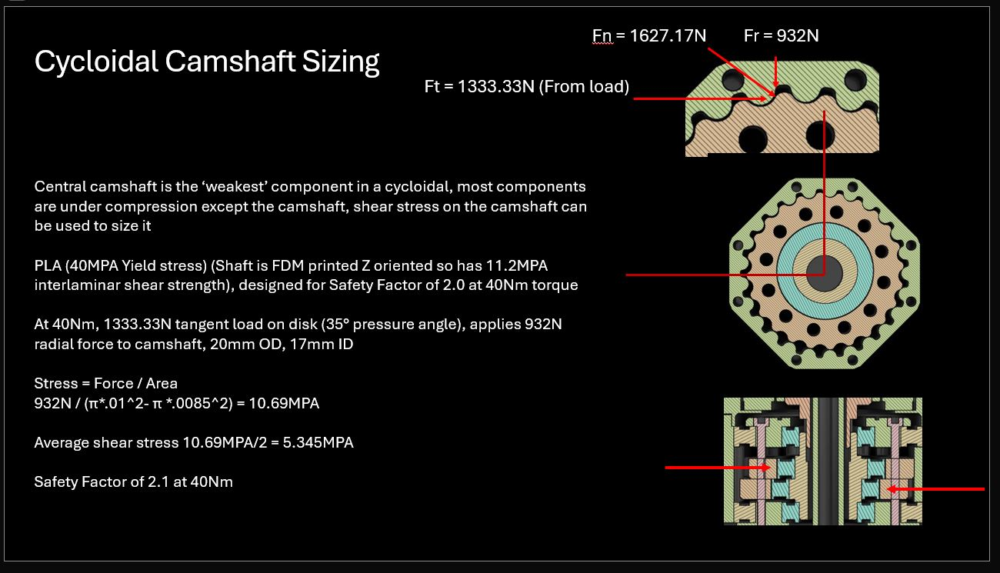
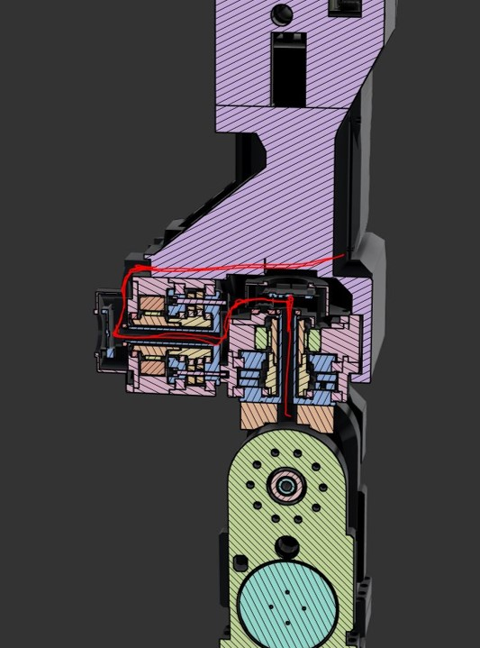
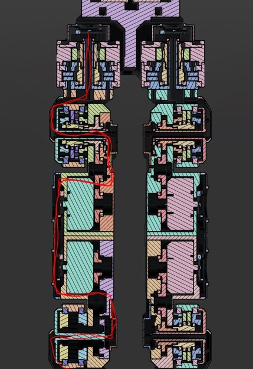
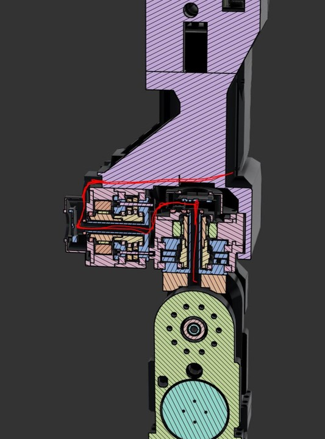
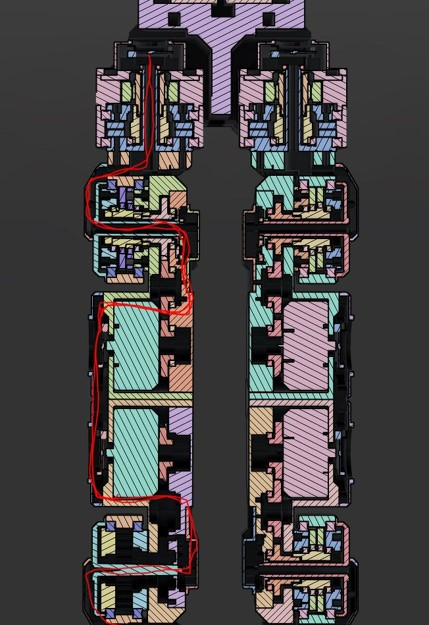

Hi, I’m Chris, an electrical engineer with a track record in robotics, power electronics, and rocket test rigs. I’m pivoting toward mechanical design and actively hunting for mechanically focused roles as I apply for a Mechanical Engineering master’s program starting in 2026.
Chris Vallone
Ongoing Projects in Robotics, Mechanical Design & Embedded Systems
🔧 Humanoid Robots & Custom Actuators
- Developing bipedal humanoid robot platform
- Designing and tuning servo actuators for precision control
- CAD, FEA, and embedded control integration
- Mechanical engineering, manufacturing engineering, DFM, cost minimization

- Design goal: go anywhere a human can go (locomotion) and handle everyday manipulation tasks.
⚙️ Actuator Analysis & Free-Body Diagrams
Joints use actuators designed to mimic human force & motion control. BLDC FOC and high‑efficiency gearing keep them compact and responsive.

Structural analysis safeguards a 30 Nm continuous / 90 Nm peak torque envelope.
🖼️ Full‑Body Cross‑Sections
Chassis routes battery, power distribution, IMU, compute, and wiring looms in a minimal envelope.
Actuators mount in serial rotary chains—four branches.
 



Reinforcement‑learning locomotion trained in simulation, transferred to hardware. Inference runs under 5 ms on edge hardware.
📸 As‑Built Actuator Gallery


🚀 UT Dallas – Bates Propulsion Labs Rocket Team
Test Stand Design & Fabrication
Built structural rigs for rocket propulsion—load calcs, welding, and sensor integration.


📐 Water Jacket Machining Drawing
Generated GD&T drawing with 0.25 mm profile tolerance for lathe work on a rocket engine water jacket.